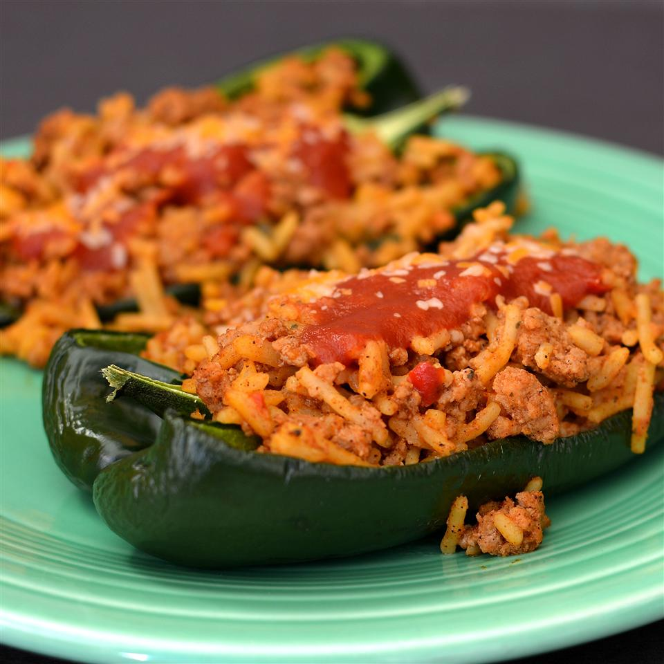

Taco Stuffed Poblano Peppers

Poblano peppers are stuffed with ground meat and Spanish rice and baked in a tomato-based sauce with a sprinkling of cheese. American comfort food done up Latin-American style. We used boxed Spanish rice, but there are a number of good recipes on this site (Spanish Rice II and Best Spanish Rice) that I have used with good results. Serve with garnishments of choice - shredded lettuce, diced tomatoes, sour cream, guacamole, and salsa.
Ingredients
- 2 cups water
- 2 tablespoons butter
- 3 large poblano peppers, halved lengthwise and seeded
- 1 (6.8 ounce) package Spanish-style rice mix
- cooking spray
- 1 pound ground beef
- ground black pepper to taste
- ½ cup water
- 1 tablespoon chili powder
- 2 teaspoons ground cumin
- 2 teaspoons garlic powder
Steps
- Bring 2 cups water and butter to a boil in a saucepan; add rice and seasoning packet. Return to a boil, cover saucepan, reduce heat to low, and simmer until most water is absorbed, 20 to 25 minutes. Fluff rice using a fork.
- Spray a 9x13-inch baking dish with cooking spray.
- Bring a pot of water to a boil; cook poblano peppers until slightly tender, about 5 minutes. Transfer peppers to a bowl of ice water to stop the cooking process; drain. Pat peppers dry and place in the prepared baking dish.
- Heat a large skillet over medium-high heat. Cook and stir beef in the hot skillet until browned and crumbly, 5 to 7 minutes; drain and discard grease. Season beef with black pepper. Mix 1/2 cup water, chili powder, cumin, onion powder, garlic powder, and cayenne pepper into ground beef; cook and stir until liquid evaporates, 2 to 3 minutes.
- Preheat oven to 350 degrees F (175 degrees C).
- Mix rice into beef mixture; cook and stir until evenly mixed and all liquid is evaporated, 5 to 10 minutes. Spoon mixture into the peppers.
- Stir tomato soup and about 1 tablespoon water together in a bowl until soup is thinned to a gravy consistency, adding more water if needed. Pour tomato gravy over stuffed peppers; top with mozzarella cheese. Cover baking dish with aluminum foil.
- Bake in the preheated oven for 20 minutes. Remove aluminum foil and continue baking until cheese is slightly browned, 10 to 15 minutes more.